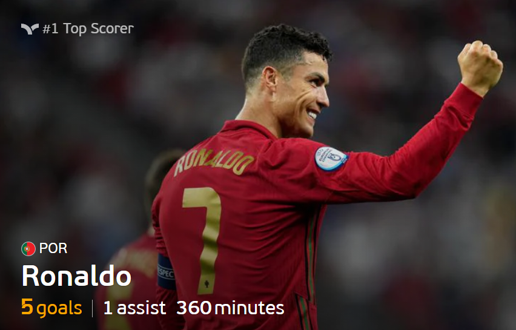
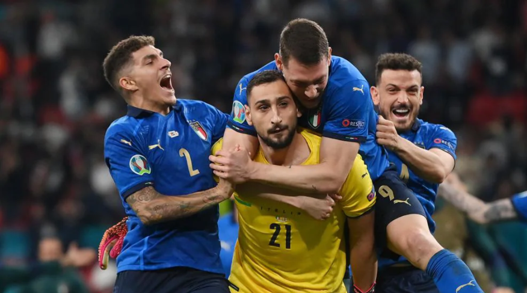
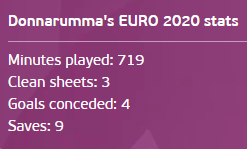
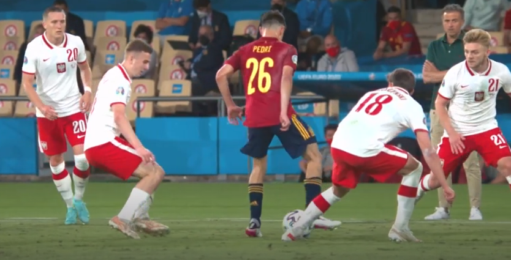
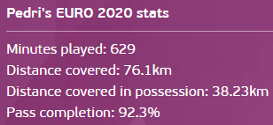
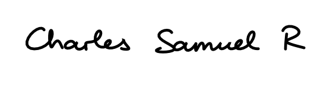

Day 31 - The Final
Italy v England
Penalty shootout
Berardi (1-0)
Kane (1-1)
Belotti (1-1)
Maguire (1-2)
Bonucci (2-2)
Rashford (2-2)
Bernardeschi (3-2)
Sancho (3-2)
Jorginho (3-2)
Saka (3-2)
Football has come to Rome so to speak. England started off well with the 5 at the back which neutralised Italy really well and they managed to get ahead after just 117 seconds via Luke Shaw who was completely unmarked from a cross by Trippier. Later on in the first half, it was possession from Italy all the way through but England held firm. The pressure that they employed as well made sure they would do long balls and get the ball back right away. Chiesa was a constant threat for England and they could not keep up with him. He had 2 chances, one which was wide after getting away from Rice and another which was on target but saved well by Pickford. Second half was complete Italian domination in terms of possession and they managed to get the equaliser of a corner when the ball was around the box and Bonucci managed to score from close in. Moving on to extra time was when England messed up with late subs and penalty subs when they could have brought them on it extra time to take advantage of a tiring defence. After Chiesa came off Italy weren’t all that great in attack spare for a chance in normal time when Berardi managed to latch onto a ball over the top but blazed it over. The penalty shootout was confusing to say the least from England. They could have had the experience of Henderson but he was subbed off. Rashford and Sancho who have hardly seen a minute in this tournament are all of sudden called upon only towards the end of extra time. Saka taking the final penalty to keep them in it when there are older players than him. It was a big bottle job from them. Donnarumma kept his cool and saved the final penalty to win the Euros for Italy.
Player Awards
Golden Boot

Player of the Tournament - Gianluigi Donnarumma(Italy)


Young Player of the Tournament - Pedri(Spain)


The Euros 2020 by
|  |
|---|
| Signature came from here |